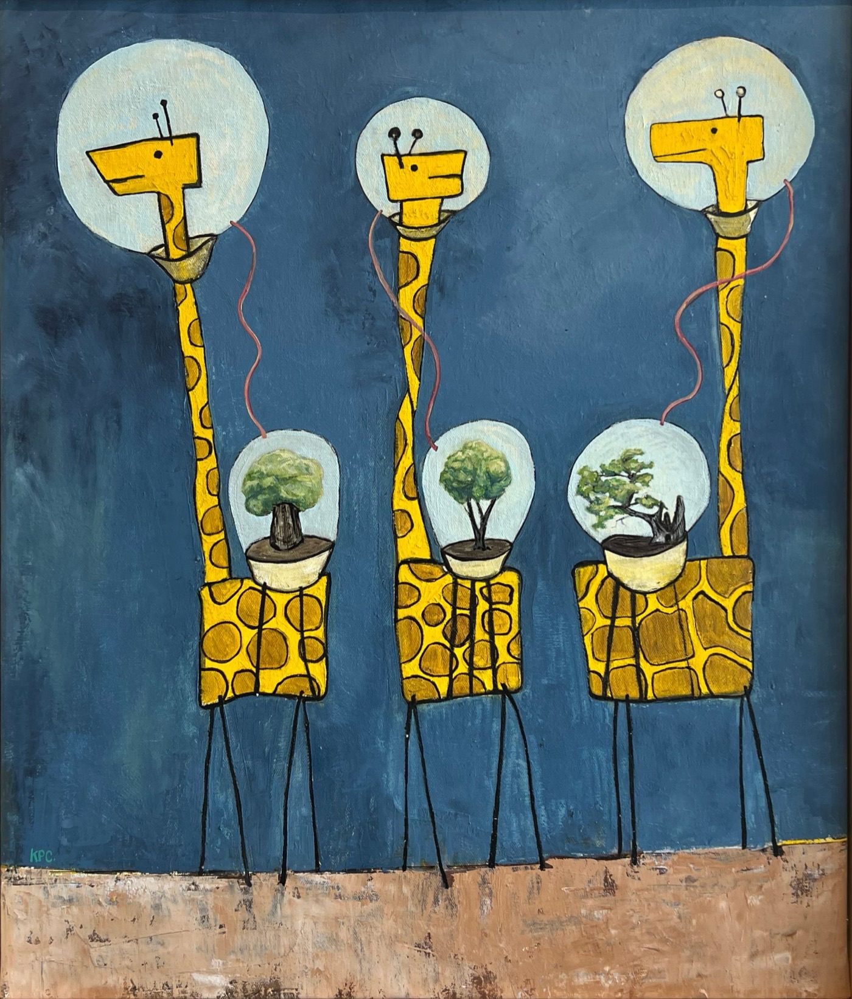
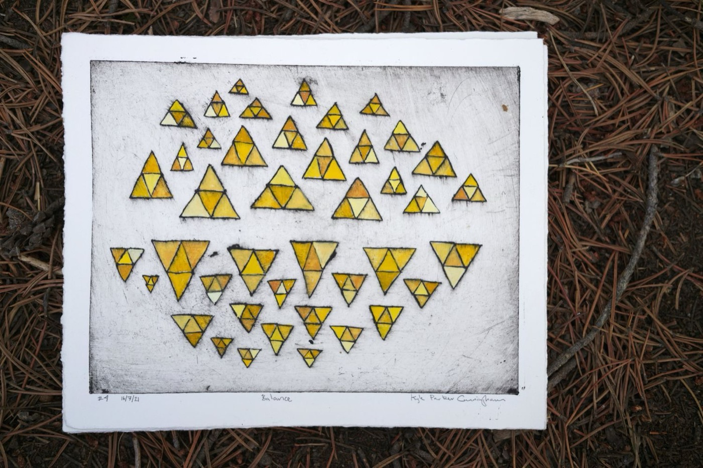

Sc. 01 · Establishing · Wide
The whole wall, Desert Archaic
Truth or Consequences, NM
2022 · 00:00:00:00
2022 · 00:00:00:00
Ruminations on the ever present world unfolding right before us.






Installation of Once Creatures Existed. Ruminations on the ever present world unfolding right before us. Twenty-three paintings. October 2021 – January 2022. Desert Archaic, Truth or Consequences, New Mexico.
Individual works are situated together forming dense matrices of interconnected stories. The installations mimic ubiquitous computer interfaces chock full of multilayered information streams which in turn mirror the overlapping and intertwined drawings found in caves the world over.